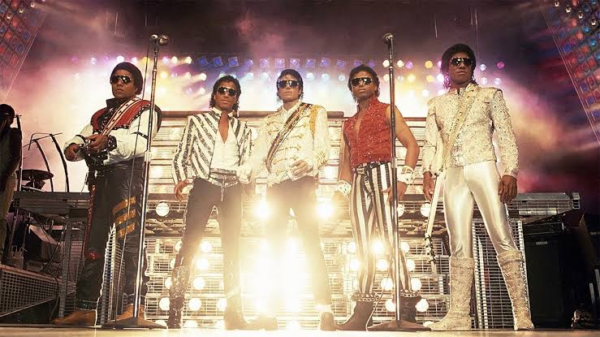
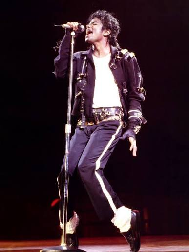
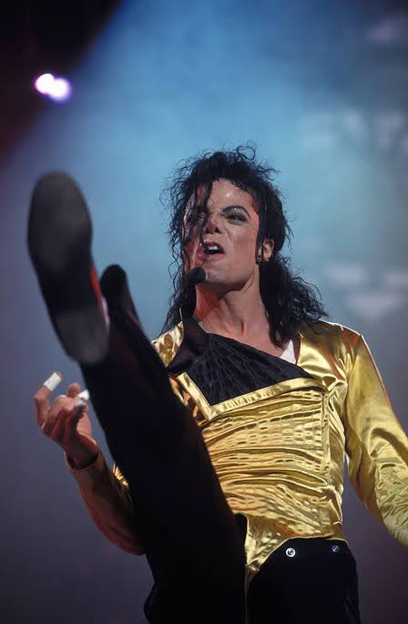
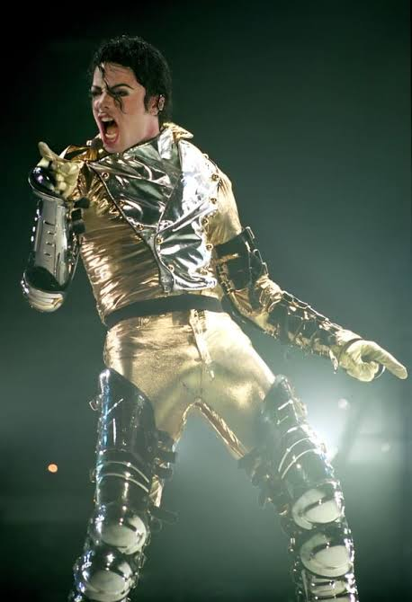
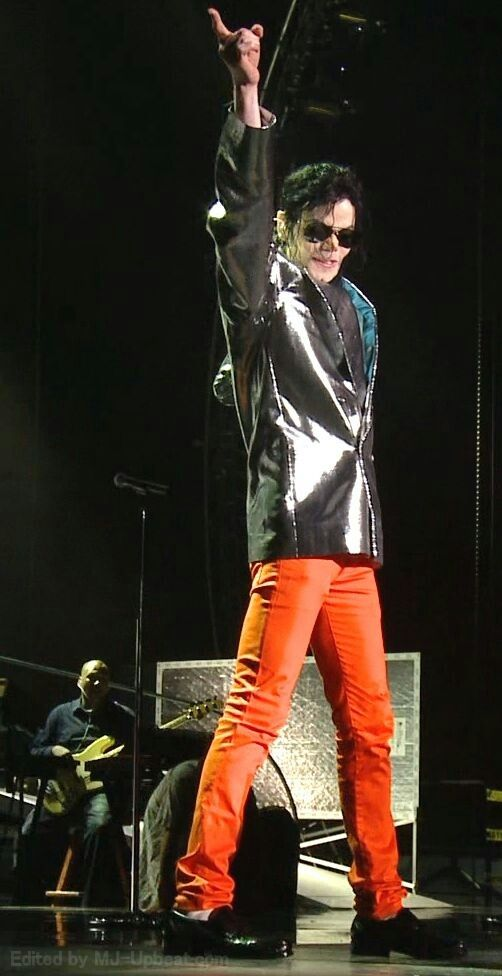

1. Victory Tour (1984)
Acompañante: The Jacksons
Fue la última gira que Michael realizó junto a sus hermanos. Celebró el éxito masivo del álbum Thriller y reunió a más de 2 millones de espectadores en Estados Unidos y Canadá.

Un recorrido por las giras mundiales que cambiaron la historia del entretenimiento.
Michael Jackson no solo revolucionó la industria musical con sus álbumes, sino que transformó la forma en que se concebían los conciertos en vivo, incorporando efectos especiales, coreografías complejas y producciones multitudinarias.
Acompañante: The Jacksons
Fue la última gira que Michael realizó junto a sus hermanos. Celebró el éxito masivo del álbum Thriller y reunió a más de 2 millones de espectadores en Estados Unidos y Canadá.

Formato: Primera gira mundial en solitario
Con 123 conciertos en 15 países, la gira del álbum Bad rompió récords mundiales de asistencia y recaudación, consolidándolo como el ícono pop definitivo en los cinco continentes.

Puesta en escena: Innovación con ilusión de vuelo e interactividad
Famosa por su icónico inicio donde Michael salía disparado del escenario. Las ganancias de esta gira fueron donadas a la fundación Heal the World.

Récord: La gira en solitario con mayor público de Michael
Abarcó 82 conciertos y reunió a más de 4.5 millones de fanáticos. Destacó por la entrada monumental con una estatua dorada gigante y una ambientación futurista.

Lugar: O2 Arena, Londres
Iba a ser su serie final de 50 conciertos de residencia en Londres. Aunque no llegó a realizarse por su fallecimiento, los ensayos quedaron grabados en un aclamado documental póstumo.
